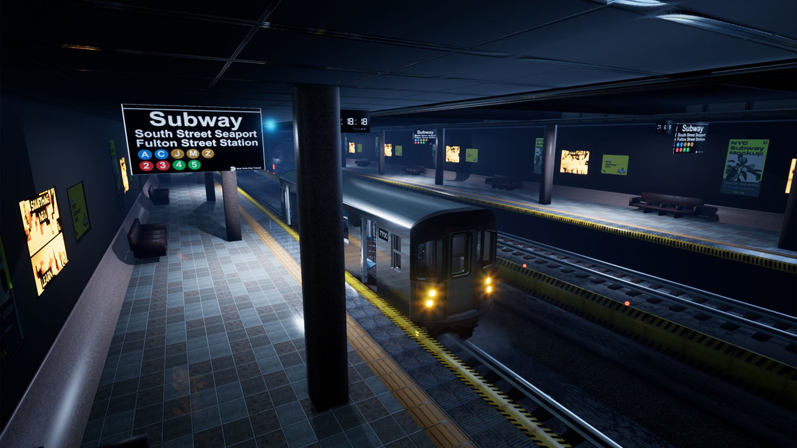

이스터에그:미친놈아 이걸 어떻게 찾아?
【 태성 】
뭐야...여기는 어디지?
1.지금 이곳은 Nightmare로 트라우마가 형상화된 공간이다.
2.트라우마가 강하면 강할수록 Nightmare로 들어올 가능성이 높다.
3.크리스마스와 가까운 날에 이곳에 들어올 수 있다.
(12/23~12/25로 추정됨)
4.Nightmare에서 죽으면 현실로 돌아가며 Nightmare에서의
기억은 잃고 트라우마가 더 강해진다.
5.Nightmare에서 죽어서 현실로 돌아가면 크리스마스에
다시 Nightmare로 끌려들어올 가능성이 높다.
6.Nightmare에서 얼마나 시간을 보내는지에 상관없이
현실로 복귀하면 Nightmare로 들어가기 조금 전으로 복귀된다.

Bad Ending -TRAUMA
Chapter1 - interrogation